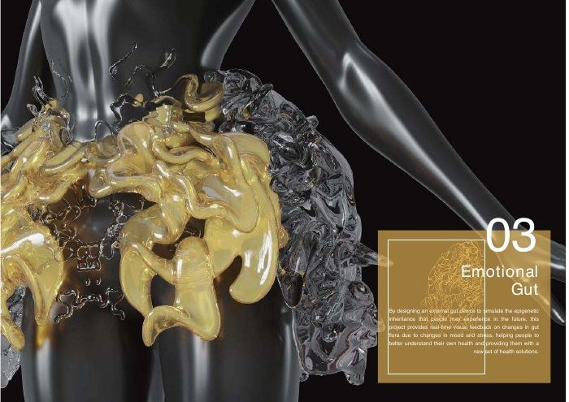
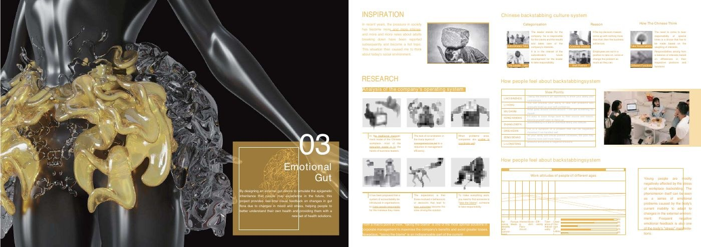
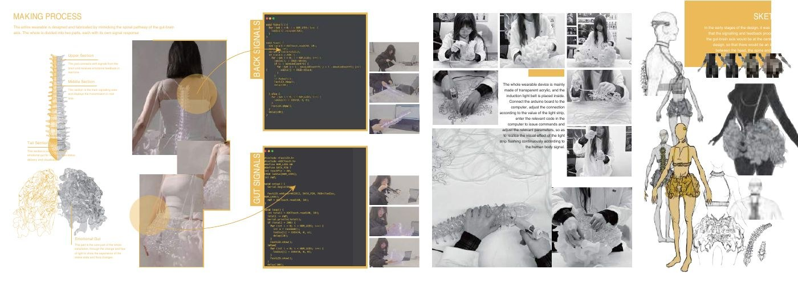

Speculative wearable · Physical interaction
Emotional Gut
Externalize the tension people carry through a working day.
A sculptural wearable inspired by the gut–brain relationship, exploring how internal stress might become visible through an external object and changing light.
This is a design exploration. It is not a validated emotion detector, medical device, or treatment for stress.

From social pressure to form
The original research framing examines workplace blame and emotional strain. The wearable translates an internal burden into a visible, sculptural form inspired by the body.
The material experiment
Development boards document the object’s construction, electronic components, and on-body presentation. Its value here is the relationship between form, bodily experience, and feedback, rather than a claim of physiological accuracy.

